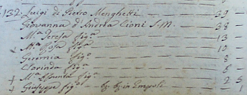
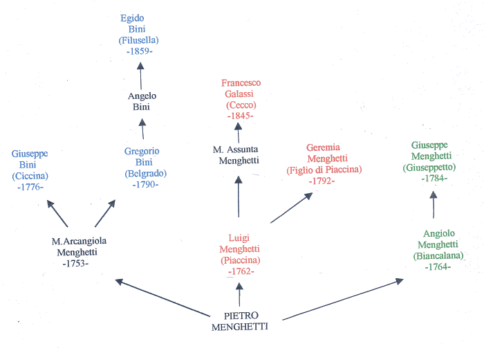

|
- LA FAMIGLIA MENGHETTI -
|
|
Una delle più importanti dinastie di fantini, furono
i componenti della famiglia Menghetti e, attraverso i libri parrocchiali, conservati nella
Propositura di Empoli, siamo riusciti a risalire a otto di quelli che furono i protagonisti
del Palio di Siena.

Dei i figli che ebbero Pietro
Menghetti e Margherita Santini, tre
risultano utili alla nostra indagine: Maria Arcangela, Luigi
e Angelo.
- Maria Arcangela nacque a Empoli il 30 settembre 1753.

Si sposò il 20 febbraio 1775 con il suo concittadino Ignazio Bini nato il 16 ottobre 1753.
Dalla loro unione, il 17 febbraio 1776, nacque Francesco Giuseppe Bini detto Ciccina che corse
dal 1794 al 1829, con un'interruzione durata ben 18 anni: dal 1796 fino al 1814. Ebbe
la soddisfazione di vincere nell'agosto 1814 per la Torre, nel luglio del 1815 e del 1821 per l'Aquila,
e nell'agosto del 1825, ormai già 49enne, di nuovo per la contrada di Salicotto.
L'8 marzo 1790 ebbero Gregorio, detto Belgrado,
che corse il Palio per 10 volte, dall'agosto 1814 all'agosto 1822
(senza mai vincere) e che a sua volta fu nonno di Egidio
Bini, detto Filusella , anche lui mai vittorioso, che corse
per 11 volte dal luglio 1878 all'agosto 1889.
- Luigi, il più famoso di tutti, detto Piaccina, nacque il 22 giugno 1762.

Iniziò a correre non più giovanissimo, infatti aveva già compito 25 anni e, nel prosieguo della sua lunghissima carriera durata 44 anni, disputò
66 Palii,
fino alla veneranda età di 69 anni, vincendone 8, sette delle quali
dopo aver superato la soglia delle 40
"primavere".
Merita ricordare che l'ultima vittoria la conseguì
addirittura a 64 anni.
Il suo carattere non doveva essere dei più mansueti, almeno secondo ciò che appare da un
processo a lui intentato dalla Giustizia di Siena nel 1824.
Piaccina si sposò con Giovanna Cioni il 19 febbraio 1787 e nel 1845 risultava già morto.

Nel 1800 lo troviamo che abitava ancora ad Empoli, a capo della sua numerosa famiglia.

Abitavano nello stesso stabile di Ignazio Bini (padre di Ciccina e Belgrado), denominato
"Magazzino del Sale", un imponente edificio che adesso si trova in via Chiara.

Dei figli di Luigi, Geremia è quasi sicuramente colui che nei testi "palieschi" viene indicato con
il nomignolo di "Figlio di Piaccina". Nacque il 29 febbraio 1792 e corse
8 Palii (dall'agosto 1807 all'agosto 1811).
Una sorella di Geremia, Maria Assunta, nata il 29 luglio 1805, sposò il maniscalco
Andrea Galassi e dalla loro unione il 12 gennaio 1845 nacque Francesco, conosciuto con il soprannome di
Cecco che corse dal 1867 al 1885.
Rimane invece oscura l'dentità di "Luigi nipote di Piaccina".
L'unico Luigi Menghetti che poteva essere un suo nipote
(cioè figlio di suo fratello Angiolo) visse solo per 19
giorni, pertanto è da ipotizzare che fosse figlio di una delle sue sorelle.
Altra difficoltà che non siamo riusciti a superare, riguarda l'identità di
"Domenico compare di Piaccina" che, come scrive l'Anonimo, corse un Palio nel 1805
per il Bruco.
- Angiolo, nacque il 2 settembre 1764 e morì prima del 1806.

Su di lui si può formulare l'ipotesi
che sia stato quel "Biancalana", definito in alcuni manoscritti come fratello di Piaccina,
che corse in "Piazza" per 6 volte, senza mai vincere,
dall'agosto 1794 all'agosto del 1800.
Fu padre di Giuseppe Menghetti (Giuseppetto), nato il 16 maggio 1784, che
corse 4 volte dal luglio 1804 all'agosto 1805, vincendo per
la Tartuca quel Palio straordinario (ripetizione di quello
ordinario disputato il 16 dello stesso mese), voluto
dall'Imperatrice Maria Teresa d'Austria.
La carriera di Giuseppetto ebbe termine per la sua prematura
scomparsa avvenuta per cause a noi sconosciute, il 25
febbraio 1806 ancor prima di compiere 22 anni.

In questo sintetico albero genealogico dei fantini delle famiglie Menghetti, Bini e Galassi, oltre al nome, viene riportata anche la data di nascita. In nero invece le madri o comunque chi non prese mai parte al Palio di Siena.

|
|